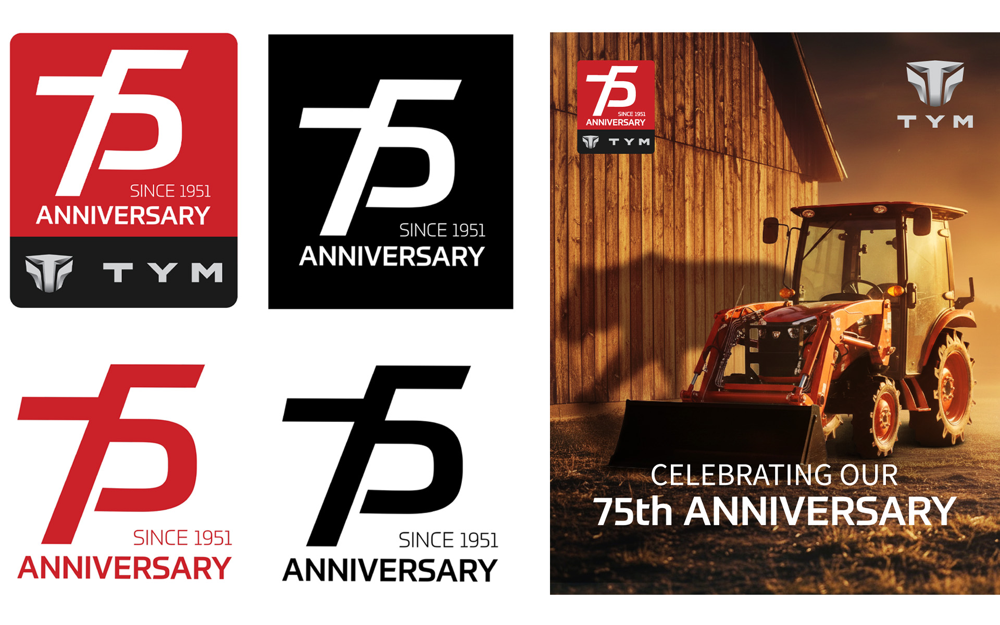
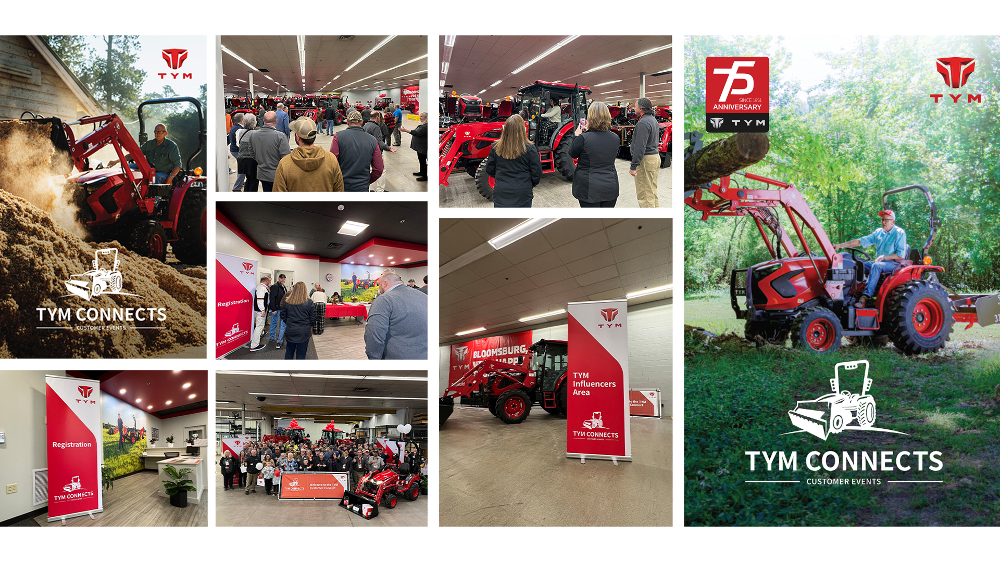

Seventy-five years ago, a small company made a promise to the people who work the land. Today, that promise is still running strong.
Anniversaries are easy to celebrate with a date. The harder part is making people feel the years behind it. For TYM’s 75th, the story was never about the past alone. It was about the farmers, the dealers, and the generations who built something together, one season at a time. So I set out to create a campaign that honored where TYM came from and showed everyone where it is headed.
I was involved in every part of the campaign. I designed the 75th anniversary logo, then carried it through the anniversary film and photography, directing the shoot and shaping the visuals that told the story. The work was recognized with an award at NAEDA. Beyond the creative, I helped bring the celebration to life in person through TYM Customer Connect, a dealer event we hosted to welcome TYM dealers and thank the partners who stand behind the brand every day. From the first logo sketch to the last handshake at the event, every detail was built to say the same thing: TYM grows together with the people who trust it.

In celebration of opening new office in Bloomsburg, dealers were invited for tractor introductions, business discussions, and various events such as tractor test drives.
